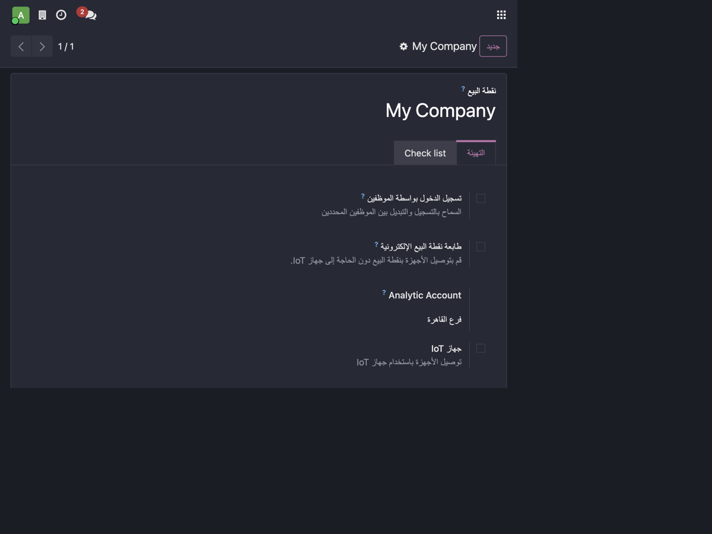
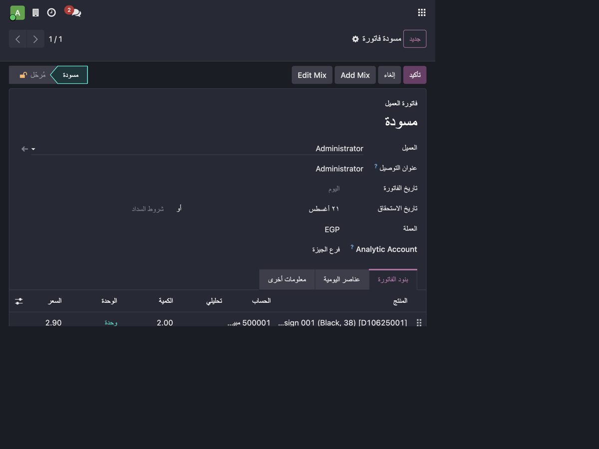
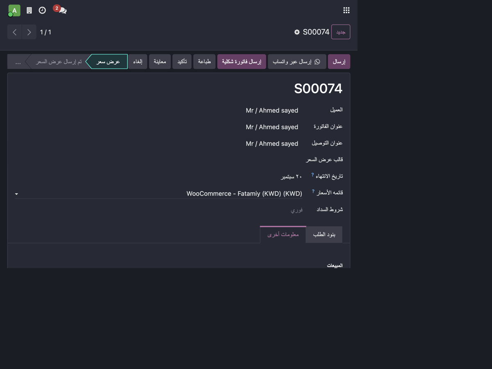
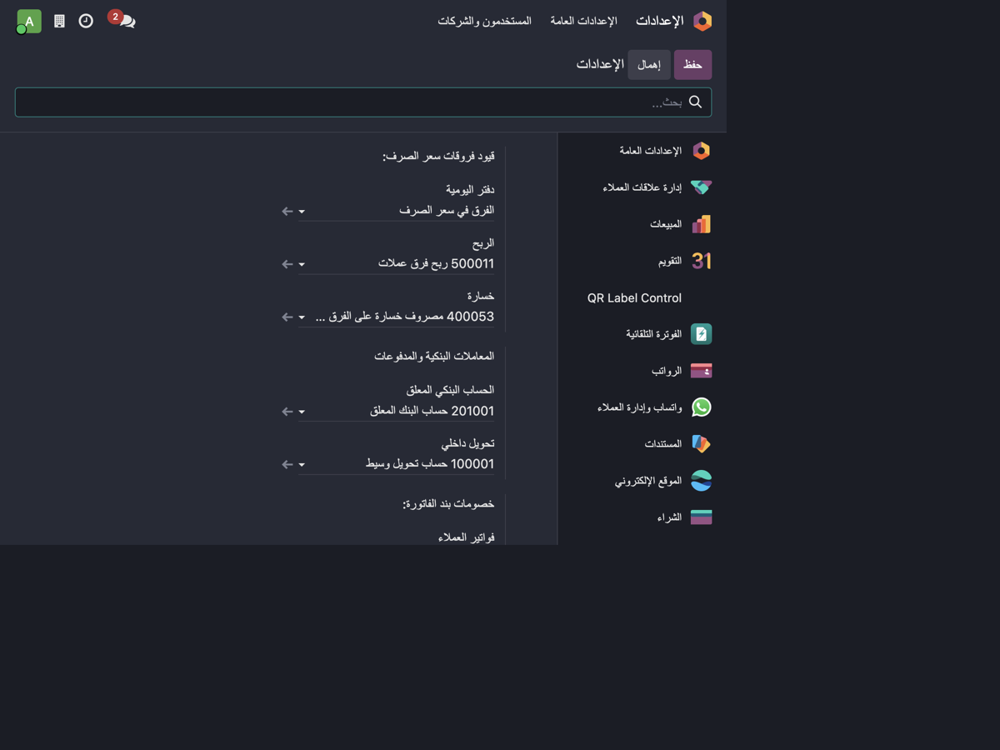

Branch Analytic Accounting
Turn Odoo Analytic Accounting into a branch / profit-center tracking system.
Assign one branch (analytic account) to a Point of Sale configuration, a sales order or a
customer invoice, and Odoo automatically posts the revenue and the cost of goods sold (COGS)
onto that same branch. The native analytic P&L report then shows, per branch:
Revenue
- COGS
-----------
= Gross Profit
Key features
- Point of Sale New Analytic Account field on every POS configuration.
- POS session closing Sales, refunds, COGS and COGS reversals automatically receive the POS analytic account (100%). Receivable, cash, bank, tax and stock-valuation (balance-sheet) lines are never polluted.
- Customer invoices & credit notes An Analytic Account header propagated to the invoice product lines; native
stock_account then copies it onto the COGS lines. Credit notes reverse on the same branch.
- POS-generated invoices Inherit the analytic account from the POS configuration — no manual selection.
- Sales orders An Analytic Account header propagated to the order lines, then natively to the invoice and COGS.
- Optional enforcement Require an analytic account before closing a POS session, posting a customer invoice, or confirming a sales order.
Why only P&L lines?
Receivable, cash, bank, tax and stock-valuation accounts live on the balance sheet and must never carry a branch.
This module tags only the income / expense lines, so the branch P&L stays clean and the balance
sheet is left untouched.
Configuration
- Create the branch analytic accounts (Accounting → Configuration → Analytic Accounts), optionally under a dedicated analytic plan such as Branches.
- Assign an analytic account on each Point of Sale configuration (Point of Sale → Configuration → Point of Sale).
- Optionally enable the enforcement toggles in Settings → Accounting → Analytics.
Screenshots
Point of Sale — Analytic Account
Pick the branch analytic account on each POS configuration; every closed session posts sales, refunds and COGS to that branch.

Customer invoice — Analytic Account header
Select the branch on the invoice header; product lines and COGS inherit it automatically.

Sales order — Analytic Account header
Select the branch on the sales order; it flows natively to the invoice and COGS.

Settings — Analytics enforcement
Optionally require an analytic account before closing a POS session, posting a customer invoice, or confirming a sales order.

Technical notes
- Odoo 19 Community — built with standard inheritance only; no core files are modified.
- Uses the native
analytic_distribution and native stock_account COGS flow — no duplicated COGS entries.
- Multi-company safe (
check_company=True).
- Includes automated tests covering POS sale/refund, two branches, customer invoice, credit note, POS-generated invoice and sales orders.